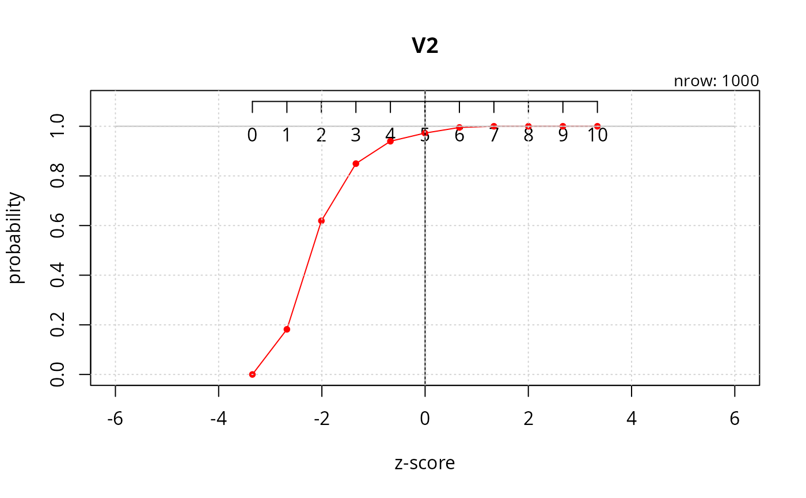
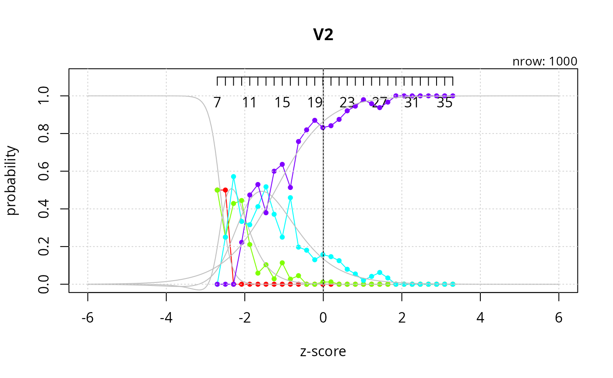

Estimates item (and, for polytomous items, response-option) characteristic curves directly from raw response data, without assuming a parametric IRT form (1PL/2PL/3PL, GRM, ...). Respondents are grouped by their observed total (sum) score, which stands in for the latent trait, and for each item option the probability of endorsement is simply the empirical proportion of respondents in that score group who endorsed it. A quasibinomial logistic curve can optionally be fit through those empirical points as a smoothed approximation, and a monotonicity index is computed per option as a quick diagnostic of how well its endorsement probability tracks the trait axis.
For each item, every response option i (1..max(item)) gets
its own EmpiricalIRT entry holding three empirical
curves computed from three indicator vectors: exactly option i
(responses1), more than i (responses2), and less than
i (responses3). For dichotomous (0/1) items there is a
single option (i = 1) and only responses1/y1 is
meaningful.
Arguments
- data
A
data.frameof item responses: one column per item, one row per respondent. Values must be numeric (dichotomous 0/1 or polytomous 1..k). Used to compute total scores and, per item, the empirical response-option curves.- items
Character vector of column names in
datato include in the model. IfNULL(the default), every column ofdatais used.- addlogit
Logical. If
TRUE(the default), fit a quasibinomial GLM (y ~ x,family = quasibinomial) through each of the three empirical curves (y1,y2,y3) against the z-score axis, so that a smoothed curve can be overlaid on the raw empirical points when plotting. IfFALSE, curve fitting is skipped and the resultinglogit1/logit2/logit3slots stayNULL.
Value
An S4 EmpiricalIRTModel object with slots:
datathe (possibly subset-by-
items) input datasum_scorestotal score per respondent (row sum of
data)sum_scores_mean,sum_scores_sdmean and SD of
sum_scoresscores_axisevery integer total score from the observed minimum to maximum, i.e. the x-axis in raw score units
z_scores_axisscores_axisstandardized to z-scores usingsum_scores_mean/sum_scores_sd; this is the x-axis used for plotting and for the logistic fitsitemsnames of the items included in the model
irtsa named list, keyed by item name, of lists of
EmpiricalIRTobjects (one per response option of that item) — this holds all of the actual curve data described above
Use plot(model, item = ..., ...) to visualize the item/option
characteristic curves of the returned model.
Examples
sim_dichotomous <- data.frame(psych::sim.irt(nvar = 10, n = 1000, low = -4, high = 4, a = NULL, c = 0, z = 1, d = NULL, mu = 0, sd = 1, mod = "logistic")$items)
sim_polytomous <- data.frame(psych::sim.poly(nvar = 10, n = 1000, low = -4, high = 4, a = NULL, c = 0, z = 1, d = NULL, mu = 0, sd = 1, cat = 5, mod = "logistic")$items)
m1 <- irt_empirical_model(data = sim_dichotomous, items = NULL)
m2 <- irt_empirical_model(data = sim_polytomous, items = NULL)
#> Warning: the standard deviation is zero
#> Warning: the standard deviation is zero
plot(m1, type = "ICC", xlim = c(-6, 6), item = "V2", draw.logit_method = 0, add_score_axis = TRUE)

plot(m2, type = "ICC", xlim = c(-6, 6), item = "V2", draw.logit_method = 0, add_score_axis = TRUE)
